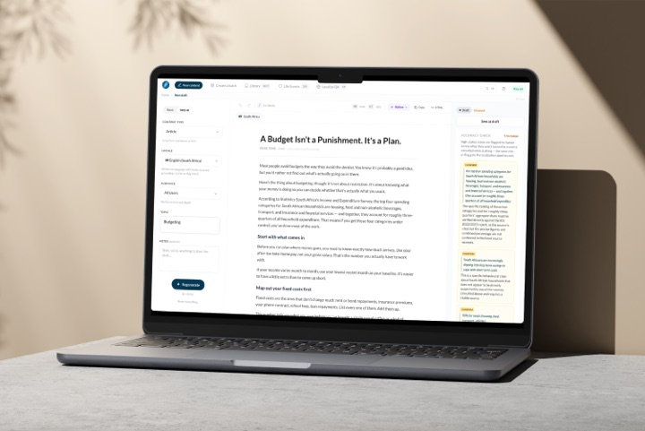
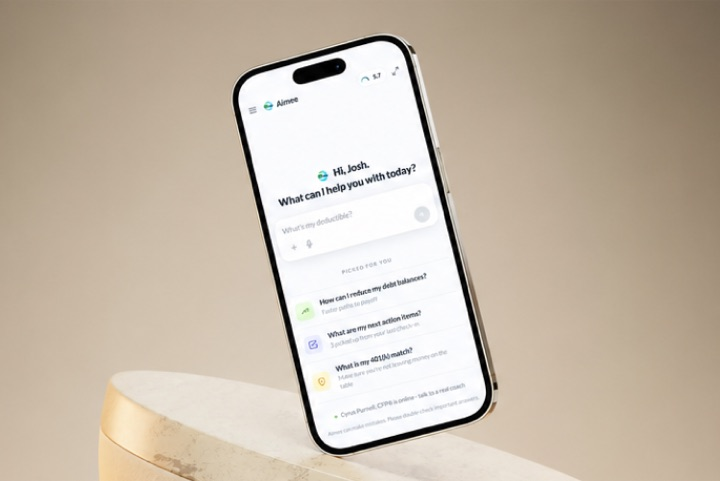
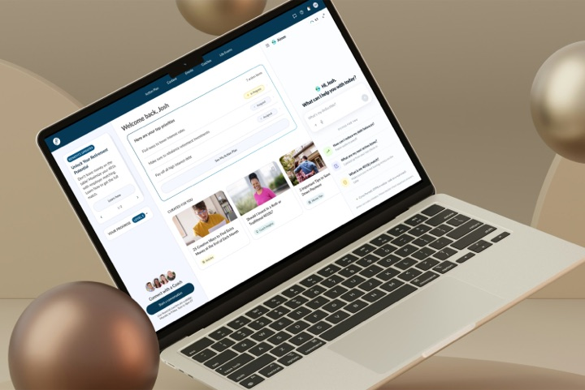
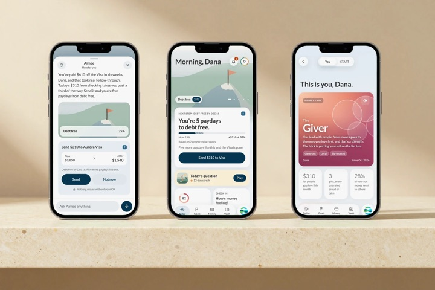

Bri May
AI-Native Senior Product Designer
I design the product, then I ship the code.




Experience
Financial Finesse2016 – Present
AI-Native Senior Product Designer · AI Team2025 – Present
- I joined when the company had a brand and no product. I designed every product it ships today, working directly with the CEO and the dev team.
- I built Global Content Studio. I saw writers putting company content into unregulated AI tools, so I designed a safe way to do it and built the first version with Claude Code. It was in launch testing four weeks after my first commit, localized 3,512 pieces in one four-day run, and is now live in 25 countries. imbrimay.com/work/global-content-studio
- I designed how review works. The AI flags problems, and a person approves every article before it goes live. On 75 real UK articles, the checks rewrote 13 for UK readers and dropped 62.
- I designed Aimee, our AI financial coach, for the Hub, a client widget, and Microsoft Teams. I prototyped her in code, then merged her design tokens and four components into the production SDK myself. imbrimay.com/work/aimee
- I ship production code. I built the review screens that decide what gets published, and I keep our design system in code, accessible and in light and dark mode.
Product Creative Director2022 – 2026
Customers include the Federal Reserve, Meta, NFL, JPMorgan Chase, Nestlé, Patagonia, Comcast, McKinsey
- I moved our design from marketing-led to product-led, brought in user research, and set the quality bar as the team grew.
Lead Product Designer2017 – 2025
- I prototyped the first Hub in 24 hours. For its 2024 redesign, I turned a one-page concept into the full design in 2.5 weeks, ran 5 rounds of user testing with 48 people, and launched with dev by the January 1 deadline. Internal reporting showed +200% engagement. imbrimay.com/work/hub
Senior Graphic Designer2016 – 2017
- I built the brand and our first design system. Within a year the job turned into product design.
CKC Communications · Graphic Designer2012 – 2015
- Branding, websites, and campaigns for 50+ companies.
Skills
EngineeringTypeScript, React, Lit, HTML & CSS, Tailwind, Cloudflare Workers, Python, Playwright, Git
AI systemsClaude Code, Anthropic API, RAG and grounding, evals and human review, LLM pipelines, conversational UX
Design0-to-1 product design, design systems, prototyping in code, user research, Figma
Education
California State University, Chico · B.S. Business, Marketing · Full-ride soccer scholarship2012 – 2015
Arizona State University · D1 soccer, full-ride scholarship2 years